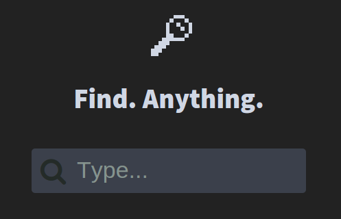
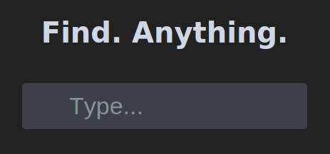

Webpack
The Module Bundler
A presentation by Alper Ortac
#me
- Frontend Developer @ Cisco
- Fullstack Webdev Enthusiast
Webpack?
Yes, their logo is awesome.
Webpack!
It is
It is not
Our mission today

Now, we will build this search page step by step.app.js
var template = '' +
'Find. Anything.
' +
'';
document.getElementById("app").innerHTML = template;
index.html
<html>
<head>
<title>Find. Anything. - A Webpack Experiment</title>
</head>
<body>
<div id="app"></div>
<script type="text/javascript" src="dist/bundle.js"></script>
</body>
</html>
Where does bundle.js come from?
webpack.conf.js
module.exports = {
entry: {
app: "source/script/app.js"
},
output: {
path: "dist",
filename: "bundle.js"
}
}
webpack [--color] [--watch]
Show me the demo already
Link: Step 1
Our First Bundle
Let's create a module and import it.Modules & Imports
search.js
var template = "...";
module.exports = {
template: template
};
app.js
var search = require("search.js");
// do something with search.template
Link: Step 2
Our First
Module Import
Nothing changed visually. Now for the real stuff.
Loaders
- Webpack works with vanilla Javascript out of the box
- Loaders extend that functionality
- They are transformations applied on files
Let's enable Babel
$ _
npm install babel-loader
webpack.config.js
module: {
loaders: [
{ test: /\.js$/, loader: 'babel' }
]
}
Now we can use ES6 style imports
//var search = require("search.js");
import search from "search.js";
Link: Step 3
Babel'ed

Let's see how we can improve templating and stylesheets.Loaders can do a
lot more than transforming Javascript files
There is a loader for everything™
basic
json: Loads file as JSONhson: Loads HanSON file (JSON for Humans) as JSON objectraw: Loads raw content of a file (as utf-8)val: Executes code as module and consider exports as JavaScript codeto-string: Executes code as a module, casts output to a string and exports itimports: Imports stuff to the moduleexports: Exports stuff from the moduleexpose: Expose exports from a module to the global contextscript: Executes a JavaScript file once in global context (like in script tag), requires are not parsed.source-map: ExtractsourceMappingURLcomments from modules and offer it to webpackchecksum: Computes the checksum of a filenull: Emits an empty module.cowsay: Emits a module with a cowsay header.dsv: Loads csv/tsv files.glsl: Loads glsl files and support glsl-chunks.render-placement: Adds React.render to your component for you (not very practical in most cases)xml: Loads XML as JSON.svg-react: Load SVG files as JSX-ified React.createClass declarations.base64: Loads file content as base64 string
packaging
file: Emits the file into the output folder and returns the (relative) url.url: The url loader works like the file loader, but can return a Data Url if the file is smaller than a limit.worker: The worker loader creates a WebWorker for the provided file. The bundling of dependencies of the Worker is transparent.shared-worker: Like the worker loader, but for Shared Workers.serviceworker: Like the worker loader, but designed for Service Workers.bundle: Wraps request in arequire.ensureblock (callback)promise: Wraps request in arequire.ensureblock (promise)react-proxy: Code Splitting for react components.react-hot: Allows to live-edit React components while keeping them mounted and preserving their state.image: Compresses your images. Ideal to use together withfileorurl.img: Load and compress images with imagemin.svgo-loader: Compresses SVG images using svgo librarybaggage: Automatically require any resources related to the required onepolymer-loader: Process HTML & CSS with preprocessor of choice andrequire()Web Components like first-class modules.uglify-loader: Uglify contents of a module. Unlike uglify plugin you can minify with mangling only your application files and not the librarieshtml-minify-loader: Minifies HTML using minimizevue-loader: Load single-file Vue.js components as modules, with loader-support for preprocessors.tojson-loaderSerialize module exports as JSON. Cache generated static data as JSON at build time.zip-it-loaderConvert files and directories to zip. Great withfile.
dialects
coffee: Loads coffee-script like JavaScriptcoffee-jsx: Loads coffee-script with JSX like JavaScriptcoffee-redux: Loads coffee-script like JavaScriptjson5: Like json, but not so strict.es6: Loads ES6 modules. (old)esnext: Transpile ES6 code using esnext.babel: Turn ES6 code into vanilla ES5 using Babel.regenerator: Use ES6 generators via Facebook’s Regenerator module.livescript: Loads LiveScript like JavaScriptsweetjs: Use sweetjs macros.traceur: Use future JavaScript features with Traceur.ts: Loads TypeScript like JavaScript.typescript: Loads TypeScript like JavaScript.typescript-simple-loader: Loads TypeScript with syntactic and semantic errors.awesome-typescript-loader: Loads TypeScript like JavaScript with watching support. Works with TypeScript 1.5-alfapurs-loader: Loads PureScript like JavaScript.oj: Loads OJ (an Objective-C like language) files and compiles them to plain JavaScript.ulmus: Loads Elm files and compiles them to plain JavaScript.miel: Loads Miel syntax and compiles to JavaScript.
templating
html: Exports HTML as string, require references to static resources.riot: Load RiotJS tags and convert them to javascript.jade: Loads jade template and returns a functionjade-html: Loads jade template and returns generated HTMLtemplate-html: Loads any template with consolidate.js and returns generated HTMLhandlebars: Loads handlebars template and returns a functiondust: Loads dust template and returns a functionractive: Pre-compiles Ractive templates for interactive DOM manipulationjsx: Transform jsx code for React to js code.react-templates: Loads react-template and returns a functionem: Compiles Emblem to Handlebars.jsejs: Loads EJS (underscore( templating engine) template and returns a pre-compiled functionmustache: Pre-compiles Mustache templates with Hogan.js and returns a functionyaml: Converts YAML to JSONmarkdown: Compiles Markdown to HTMLremarkable: Compiles Markdown to HTML using the Remarkable parsermarkdown-it: Compiles Markdown to HTML using the markdown-it parserng-cache: Puts HTML partials in the Angular’s $templateCachengtemplate: Bundles your AngularJS templates and Pre-loads the template cache.hamlc: Compiles haml-coffee templates (.hamlc) and returns a function.haml: Renders haml-coffee templates (.html.hamlc) and returns a string.jinja: Precompiles nunjucks and jinja2 templatessoy: Compiles Google Closure templates and returns the namespace with render functionssmarty: Pre-compiles php smarty templates and returns a functiontemplate-string: Use ES6 template strings for html templates
styling
bootstrap-sass: Loads a configuration file for Twitter Bootstrap integration using Sass. Allows complete customization via Sass.style: Add exports of a module as style to DOMcss: Loads css file with resolved imports and returns css codeless: Loads and compiles a less filesass: Loads and compiles a scss filestylus: Loads and compiles a stylus filerework: Post-process CSS with Rework and returns CSS codepostcss: Post-process CSS with Autoprefixer and other PostCSS pluginsautoprefixer: Add vendor prefixes to CSS rules using values from Can I Usenamespace-css: Namespace your css with a given selector (for encapsulating all rules in one subset of your site)fontgen: Create your own webfont with proper CSS on-the-fly and include it into WebPack.
translation
po: Loads a PO gettext file and returns JSONformat-message: Compiles translations to ICU Message Format strings informatMessagecallsjsxlate-loader: Transform React source code for use withjsxlatewebpack-angular-translate: Extracts angular-translate translation id’s and default text’s
support
mocha: do tests with mocha in browser or node.jscoverjs: PostLoader to code coverage with CoverJsistanbul-instrumenter: Istanbul postLoader to code coverage with karma-webpack and karma-coverageisparta-instrumenter: Isparta preLoader to code coverage with karma-webpack and douglasduteil/karma-coverage#nextibrik-instrumenter: Ibrik preLoader to CoffeeScript code coverage with karma-webpack and douglasduteil/karma-coverageeslint: PreLoader for linting code using ESLint.jshint: PreLoader for linting code.jscs: PreLoader for style checking.standard: Conform to standard code style.injectable: Allow to inject dependencies into modulestransform: Use browserify transforms as loader.image-size: Loads an image and returns its dimensions and typecsslint: PreLoader for linting code using CSSLintcoffeelint-loader: PreLoader for linting CoffeeScript.tslint-loader: PreLoader for linting TypeScript using TSLintparker: Output a stylesheet analysis report using parker.sjsp: Inject some codes for profiling using node-sjsp.
Loaders for HTML and CSS
Load file contents as string literal
npm install html-loader css-loader
Template function with variable replacement
npm install template-string-loader
Style injection in document
npm install style-loader
npm install html-loader css-loader
npm install template-string-loader
npm install style-loader
Loader Configuration
webpack.config.js
module: {
loaders: [
{ test: /\.html/, loader: "babel!template-string" },
{ test: /\.css$/i, loader: "style!css?modules" }
]
}
-
Loaders can be chained with
!(read the chain from right to left) -
?indicates loader parameters (modulesis for unique class names)
Unmodularized
index.html
<head>
<link rel="stylesheet" href="style/app.css" />
<link rel="stylesheet" href="style/search.css" />
</head>
search.css
.search {
width: 100%;
vertical-align: middle;
white-space: nowrap;
position: relative;
}
// ...
Modules & Templates
search.html
search.js
import template from 'template/search.html';
import styles from 'style/search.css';
module.exports = {
template: template({
styles: styles
})
};
Link: Step 4
Everything is
in one Bundle
What about images? And fonts?
Url Loader
webpack.config.js
module: {
loaders: [
{ test: /\.(png|jpe?g|gif)$/, loader: 'url-loader?limit=8192' }
]
}
app.js
import logo from 'image/logo.png';
limit=8192?
If file size is below, create an inline
Base64 string instead of copying the file
External Files
index.html
<link href="http://maxcdn.bootstrapcdn.com/font-awesome/4.1.0/css/font-awesome.min.css" rel="stylesheet">
app.css
@import url(https://fonts.googleapis.com/css?family=Source+Sans+Pro:400,900);
Note: Webpack does not provide a way
to modularize externally hosted files
Ok, there is a trick, but it's not possible to use multiple domains.
Link: Step 5
Static Assets Inside
Let's include a Javascript library.jQuery, because lazy
$ _
npm install jquery
webpack.config.js
module: {
loaders: [
{ test: /\.js$/, loader: 'babel', exclude: 'node_modules') }
]
}
Exclude node_modules from Babel preprocessor
to avoid longer build time and potential problems
Use it
search.js
import $ from 'jquery';
$(document).ready(function() {
// do something
});
Easy.
Link: Step 6
We are done
Gifs fetched from Giphy APIEven More Webpack Features
- Compress assets (minifying js/css, optimize images)
- Inlining assets (style attributes, base64 images and fonts)
- Splitting bundle into several Chunks (Async Loading)
- Common Chunks and Dead Code Removal
- Source Maps
- Application Cache
- Hot module replacement
- Many more Plugins...
What about all the other tools?
Require.JS
- Simple and Well Established
- Bundling and Async Loading
- Optimizer (combining, minifying, inlining)
- Optimizer (Config, Performance)
- No Static Assets
- AMD format is outdated and can be quite messy
It's a classic, but lacks many features.
Browserify
- Webpack-like and thought-of concepts
- node.js compliant
- Can be quite slow
- No Static Assets
- Inferior Bundle Splitting
Webpack overloads require, so if you want
reusable server-side code use browserify
Besides, it's difficult to setup (at least in my experience)
JSPM
-
package registry with dependency management
npm + github + custom (like bower) - modules and bundling
- little support for preprocessors
Strong because ES6 compliant, but requires
a partner tool for precompiling needs
Gulp
or Grunt
or Broccoli
or …
- LOADS of plugins
- Task runner (not a module loader per se)
Task runners are basically without restrictions,
but all parts need to be glued together manually
Is webpack
the holy grail?
The Good
- Modules, Loaders, Bundles & Splits work very well
- Many Plugins for special requirements
- Plays along well with other tools (e.g. gulp, bower)
- Nice Performance
The Bad
- require is overloaded, can't be used for node.js code
- External script loading is not supported (e.g. CDN)
Takeaway
Webpack is great, but it's not for everyone
This presentation
Demo source code for all steps
Inspirational Sources
- Webpack Comparison
- gulp-starter with preconfigured Webpack and many other features
- Managing your front-end with webpack by Johannes Ewald
- webpack experiment and comparison against jspm by Oliver Joseph Ash
- css-modules: Why this is the most significant improvement to CSS in years by Josh Johnston
- CSS Experiments With a Search Form Input and Button by Paula Borowska
- Giphy API Documentation
- 8-Bit Iconset
The End

Thanks for your attention!